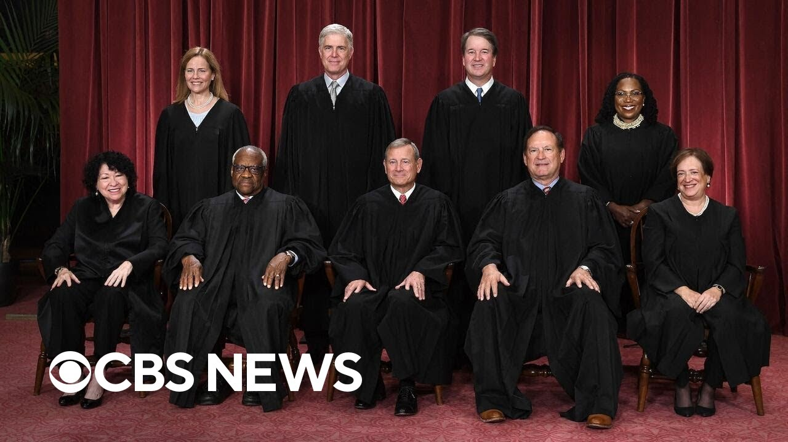

【CBS News 20250628 出生公民权案特别报道：最高法院裁决限制全国性禁令】
Summary: The Supreme Court ruled 6-3 that federal judges cannot issue nationwide injunctions, limiting their power to block presidential policies. This landmark decision, written by Justice Barrett, clarifies procedural rules but does not address the constitutionality of birthright citizenship.
摘要： 最高法院以6比3裁定联邦法官无权发布全国性禁令，限制其阻挠总统政策的权力。这一里程碑式判决由巴雷特大法官撰写，明确了程序规则，但未涉及出生公民权的宪法问题。

⏱️ Estimated Reading Time: 19 min
📚 六级生词 📚 雅思生词 📚 托福生词 📚 专八生词 📚 SAT生词 📚 考研生词 📚 GRE生词 📚 高考生词
This is a CBS News special report.
这是CBS新闻的特别报道。
I'm Tony DeCopold in New York, and we are coming on the air on this the last day of the Supreme Court term with a groundbreaking decision from the court that could have a big impact on the arguments around and over birthright citizenship.
我是纽约的托尼·德科普尔德，在最高法院任期的最后一天，我们为您带来一项可能对出生公民权争论产生重大影响的突破性裁决。
The justices have just ruled on whether a single federal judge has the authority to issue what are known as nationwide injunctions that block federal policies across the entire U.S.
大法官们刚刚裁定单个联邦法官是否有权发布所谓的全国性禁令，以阻止联邦政策在全美范围内实施。
That case goes back to a Trump administration executive order issued back in January to limit who can claim U.S. citizenship from being born, at following being born in this country.
该案可追溯至特朗普政府1月发布的行政令，该命令限制哪些在本国出生的人可申请美国公民身份。
Jan Crawford is our Supreme Court watcher and she's at the court for us this morning.
简·克劳福德是我们的最高法院观察员，今早她正在法院现场。
She's been reading this ruling which came out just minutes ago.
她正在阅读几分钟前刚公布的裁决。
I understand it's a thick opinion, Jan.
简，我知道这是一份冗长的意见书。
What does it say?
内容是什么？
Well, I, first of all, Tony, I think it's important to just say right at the top.
首先，托尼，我认为必须开门见山地说明。
This is not an opinion about birthright citizenship, about the merits of that issue, about whether or not Trump's executive order is blatantly unconstitutional as every federal judge says.
这不是关于出生公民权的意见，不涉及该问题的实质，也不评判特朗普的行政令是否如所有联邦法官所言公然违宪。
So put that to the side.
所以先把这点搁置。
This is only a ruling, and it is, I agree with you, a major landmark ruling on whether federal judges have that power, one federal judge to basically dictate policy a nationwide by invalidating a president's initiative.
这仅是一项裁决——我同意你的看法，是关于联邦法官是否拥有这种权力的重大里程碑裁决：即单个法官能否通过否决总统的动议来制定全国性政策。
This is not a partisan issue.
这不是党派问题。
This is something that's a recently new phenomenon we've seen in the last decade.
这是近十年出现的新现象。
President starting with President Obama, obviously the first administration, President Trump, President Biden, all have had to deal with federal judges blocking their initiatives and then implementing it in a nationwide manner.
从奥巴马政府开始，特朗普、拜登总统都曾遭遇联邦法官以全国范围实施的方式阻挠其政策。
So this is a big win, not only for President Trump, but for presidents of any party, because what this means is, and what the court says, and it's six three ruling written by justice, Amy Coney Barrett, dividing conservatives and liberals along ideological lines, this is not how our system is supposed to work.
因此这不仅对特朗普总统，对所有党派总统都是重大胜利。法院以6比3的裁决（由巴雷特大法官撰写，保守派与自由派按意识形态划分）表明：这不是我们制度应有的运作方式。
That Congress, when it established powers the federal judiciary back in 1789, never intended for judges, one judge to be able to basically set the rule for the whole country.
1789年国会设立联邦司法权时，从未打算让单个法官能为整个国家制定规则。
We have an appellate system.
我们设有上诉制度。
They work through the system.
应通过系统运作。
That's how the system is supposed to work.
这才是制度应有的运作方式。
So the justices in this ruling today are saying, it's not appropriate in most cases.
因此今日大法官们裁定：在多数情况下这不合适。
It's got to go about the normal process, but there are ways to get nationwide relief and the court says today, for example, people can file class actions, where that can perhaps apply nationwide.
必须走正常程序，但法院指出仍有获得全国性救济的途径，例如提起可能适用于全国的集体诉讼。
The point is, this is about process and you got to drive the right car to the courthouse.
关键在于程序——必须以正确方式提起诉讼。
And here they didn't do it the right way.
而本案中他们未采取正确方式。
So the court's saying, do this the right way, the way the system is supposed to work.
因此法院强调：请按制度设计的方式正确操作。
That means that I strongly believe Tony, that there is very little chance that this executive order on birthright citizenship will ever be implemented.
这意味着，托尼，我坚信这份关于出生公民权的行政令几乎不可能实施。
We're going to see people right away next week come back, refile some of these cases, ask for class actions that could be certified across the country.
下周我们将看到人们立即重新提起诉讼，申请可在全国认证的集体诉讼。
There's a process with that.
这需要走流程。
You will still have some of these injunctions in place.
部分禁令仍将有效。
This is just narrowing them a little bit so that they only apply to the parties who filed these cases, not to everyone.
裁决只是缩小范围，使其仅适用于案件当事人而非所有人。
So I think it's highly unlikely that this will have any practical impact on that birthright citizenship order ever being implemented, Tony.
因此我认为该裁决对出生公民权行政令的实施几乎不会产生实际影响。
All right, Jen, thank you very much.
好的，简，非常感谢。
Let's go to our Justice Correspondent, Scott McFarland, who's been following this as well.
现在请一直跟踪此事的司法记者斯科特·麦克法兰带来报道。
Scott, these injunctions have been a tool of those who oppose President Trump's efforts to block them, to stop them.
斯科特，这些禁令一直是反对者阻挠特朗普总统政策的工具。
And now it seems like the injunctions will be limited in some way.
如今禁令似乎将受到某种限制。
But Jan says maybe the implications aren't going to be as broad as that may sound.
但简认为实际影响可能不如听起来广泛。
What do you think the implications will be in terms of the relationship between the Trump administration and the federal courts?
你认为这对特朗普政府与联邦法院的关系意味着什么？
Tony, it's an important ruling but it also comes at a uniquely important moment, amid a multi-front battle between the administration and the court system, a legal battle and a political battle too.
托尼，这是重要裁决，但出台时机也极为特殊——正值政府与法院系统在多条战线展开法律与政治博弈之际。
First of all, the politics, the administration likes to be criticizing the courts.
首先是政治层面：政府乐于批评法院。
They like to have that issue to push forward their issues of the day, accusing the courts of overreaching and muting the desires of the voters who elected President Trump.
他们借此推进议程，指责法院越权压制选举特朗普的选民意愿。
But the legal battles have been unprecedented.
但法律斗争前所未有。
Some of them potentially destabilizing to the balance of power.
有些可能破坏权力平衡。
Just a couple days ago, the Trump administration in a novel case sued every federal judge in the District of Maryland, accusing them of overreaching with how they handle immigration cases.
几天前，特朗普政府在一宗新奇案件中起诉马里兰州所有联邦法官，指控其处理移民案件时越权。
The Trump administration, Tony, is accused of not following a court order, also in Maryland, to return Kilmar-Abrago Garcia, the man mistakenly deported from Maryland to El Salvador.
托尼，特朗普政府还被指控未遵守马里兰州法院命令，拒绝将误被驱逐至萨尔瓦多的基尔马尔-阿布拉戈·加西亚遣返。
And the battles are playing out all across the country, a legal showdown in so many places, Tony, between the Trump administration and the federal courts.
这场博弈正在全美多地展开——特朗普政府与联邦法院的法律对决。
All right, Scott.
好的，斯科特。
Thank you very much.
非常感谢。
What's springing in Jessica Levinson.
现在请杰西卡·莱文森分析。
She's a CBS News legal contributor.
她是CBS新闻法律评论员。
She's also a professor at Loyola Law School, who work focuses on constitutional law, election law and the Supreme Court.
她也是洛约拉法学院教授，专攻宪法、选举法和最高法院研究。
Jessica, what do you make of Justice Coney Barrett writing this majority opinion?
杰西卡，你如何看待巴雷特大法官撰写多数意见？
And a lot of people thought it was gonna be John Roberts.
许多人原以为会由罗伯茨大法官执笔。
Well, I think it makes some sense, given where she is on the court.
鉴于她在法院的立场，我认为这合乎逻辑。
And I think she was able, obviously, to command more than a simple majority, but a six to three majority.
显然她不仅获得简单多数，更争取到6比3的多数。
In your questioning during the questioning during oral arguments, I think you really heard her trying to make sense of this case and be very clear, as Jan said, that it was not about birthright citizenship.
从口头辩论中的提问可见，她试图厘清本案重点——如简所言，这与出生公民权无关。
It's not about the merits.
不涉及实质问题。
It's about the equitable power of Congress.
而是关于国会授予法官的衡平权力。
And excuse me, of Congress to grant judges this power.
准确说是国会授予法官这种权力的权限。
And so she's saying very clearly, if Congress wants to change this, they can.
她明确指出：若国会想改变，完全可以。
She's also saying very clearly, that when people walk into federal court now, and they ask for a relief of an executive order, they cannot get these universal injunctions anymore.
她还明确表示：如今当事人请求联邦法院救济行政令时，将无法再获得普遍禁令。
Instead, courts are limited in the scope, the remedy that they can provide.
相反，法院提供的救济范围将受限制。
They can provide a remedy of saying to the people who walked in, maybe it's an individual, maybe it's a group, maybe it's a state, maybe it's a class action, as Jan was absolutely correct to emphasize, that the court can give relief to those people.
如简强调的，法院可向特定对象（个人、团体、州或集体诉讼）提供救济。
I think increasingly to your question, Tony, we're going to see Justice Barrett, who I think can speak to all sides of the court, have some of these big opinions.
托尼，我认为巴雷特大法官（能沟通各方）将越来越多执笔此类重要意见。
And it's important to listen to how she asks the questions in oral arguments.
她在口头辩论中的提问方式很值得关注。
I think it gave us a roadmap for this opinion today.
这为我们理解今日意见提供了路线图。
All right, Jessica, thank you very much.
好的，杰西卡，非常感谢。
When I go back to Jan Crawford, Jan, you gave us a great overview of the majority opinion, but you've also been taking a look at the dissents in this case.
现在回到简·克劳福德。简，你精彩概述了多数意见，但本案异议意见有何亮点？
You've only had a few minutes to digest it, but what stands out to you?
虽然你刚阅读几分钟，但有什么突出内容？
Well, I'm also getting information from Melissa Quinn, who is inside the Supreme Court, saying that Justice Sonia Sotomayor is reading aloud from her dissent.
我从最高法院内部的梅丽莎·奎因处获悉，索托马约尔大法官正在宣读异议意见。
Remember the three liberal justices dissented in this case, even though one of them, Justice Kagan, expressed extreme skepticism about nationwide injunctions when President Biden was in the White House.
注意三位自由派大法官均持异议——尽管其中卡根大法官在拜登执政时曾对全国性禁令表示极度怀疑。
Now they're in dissent.
如今他们站在异议方。
And their dissent is really focusing on the issue of birthright citizenship and how this was the case that was really suited for a nationwide injunction.
其异议重点聚焦出生公民权，认为本案恰恰适合发布全国性禁令。
Remember, though, as I said, Tony, this has nothing to do with birthright citizenship.
但如我所言，托尼，这与出生公民权无关。
No judge that's considered that issue has ever said anything other than it's blatantly unconstitutional what President Trump's trying to do.
所有审理该问题的法官均认定特朗普的行为公然违宪。
And I do not believe the justices, whatever a green light that to go forward.
我不认为大法官们会为此开绿灯。
So they're saying that this is the wrong case.
因此异议意见认为本案选错了。
That this case should have been one that could be a nationwide injunction.
本应是适合全国性禁令的案件。
So there are a few cases.
确实存在少数此类案件。
And that was kind of the point that Justice Kagan was making during the oral argument that maybe there would be some case that would be suited for a broad nationwide injunction to blocking a President's initiative.
卡根大法官在口头辩论中指出：可能存在适合通过广泛禁令阻止总统动议的个案。
The problem with that, though, Tony, as the other justice has pointed out, is that every federal district court judge is going to think the issues before them are of extreme national importance.
但问题在于——其他大法官指出——每位联邦地区法官都会认为自己审理的案件具有极端国家重要性。
So it's not really going to have any impact at all.
因此这实际上毫无约束力。
You have to do something with a little more teeth to it.
必须采取更有力的措施。
For example, President Trump is now facing 40 or 50 nationwide injunctions in other cases, challenging other initiatives that he has put out there.
例如特朗普总统目前在其他案件中还面临40-50项全国性禁令的挑战。
So I do expect, going back to something Scott was saying, I do expect the administration to file motions to vacate the scope of those injunctions and try to narrow them in all of those cases.
正如斯科特所言，我预计政府将申请撤销这些禁令的适用范围，在所有案件中试图缩小其影响。
And they may win some of those, but I'm just saying in the birthright citizenship case, I highly skeptical that that will have this decision today.
他们可能赢得部分案件，但在出生公民权案中，我高度怀疑今日裁决会产生实质影响。
We'll have any real practical impact on whether Trump gets to rewrite our understanding that citizenship is automatic when you're born in this country if you're here legally or not.
即特朗普能否改写"在本国出生即自动获得公民权"的法律认知——无论是否合法居留。
You know, Jan, people turn to Supreme Court decisions for a definitive answer.
简，人们期待最高法院给出明确答案。
And I can imagine some viewers looking at the headline we have in the lower part of the screen that says injunctions likely exceed.
想象观众看到屏幕底部标题"禁令可能越权"时的困惑。
What's the work of that word likely doing in that sentence?
"可能"一词在此有何作用？
Why don't we have a definitive does exceed or does not exceed?
为何不直接判定"越权"或"未越权"？
You know, I'm looking through the opinion, that's a great question.
我正在研读意见书——这是个好问题。
And that's the language that Justice Barrett uses.
这正是巴雷特大法官使用的措辞。
I think the opinion itself is pretty clear.
我认为意见书本身很明确。
I think what we have to remember is there are ways that people can get nationwide injunctions.
需记住人们仍有获得全国性禁令的途径。
You just have to do it in the right car.
只需以正确方式操作。
You know, getting the right car, you've got a file of class action.
比如提起集体诉讼。
You have to file, you have a claim under a different federal law where you're seeking to vacate an agency rule.
或根据其他联邦法律申请撤销机构规章。
You have lived near a factory and you file a lawsuit that's specific to you, the party, but then that helps everyone if the court says no more to the pollution.
若你住在工厂附近提起个案诉讼，法院禁止污染的决定将惠及所有人。
So I think likely means like, let's scale back on these things.
因此"可能"意味着：应减少此类禁令。
There are ways to go about doing it.
存在替代方案。
And Justice Thomas and Justice Alito and their separate concurring opinion make clear that you've got to go and do it the right way.
托马斯和阿利托大法官的协同意见也强调必须采取正确方式。
That that's important for the process.
这对程序至关重要。
And so, like, this kind of case is no.
因此本案不属于此类情况。
But, you know, we'll see.
但未来仍需观察。
I mean, we've seen in some of these Trump cases as you well know, Tony, that when lower court judges get cases back down to them, they don't always react the way I think the Supreme Court believe that they would react.
如你所知，在某些特朗普相关案件中，下级法院法官未必按最高法院预期行事。
But I think this one's about as clear as you can get in this case.
但本案裁决已足够清晰。
All right, and yours clear as can be as well.
好的，你的解释也非常清晰。
Jim Crawford, thank you very much.
吉姆·克劳福德，非常感谢
Jessica Levinson, thank you.
杰西卡·莱文森，谢谢。
Scott McFarlane, thank you as well.
斯科特·麦克法兰，也谢谢你。
And just to recap, for our viewers, the Supreme Court has ruled six to three that lower court judges cannot issue nationwide injunctions in local cases.
为观众回顾一下，最高法院以6比3裁定，下级法院法官不得在地方案件中发布全国性禁令。
Quoting from the opinion, which was written by Amy Coney Barrett, quote, when a court concludes that the executive branch has acted unlawfully, the answer is not for the court to exceed its own power, too.
引用艾米·科尼·巴雷特撰写的意见书：“当法院认定行政部门行为违法时，解决方案并非让法院也越权行事。”
But they did not rule on the merits of the constitutionality, the question of birthright citizenship.
但他们未就出生公民权的合宪性问题作出实质性裁决。
That is a case for another day.
这一问题将留待日后解决。
We'll be following that as well, of course.
我们当然也会持续关注。
Our coverage of this Supreme Court ruling and others will continue on our streaming channel CBS News 24-7 on your local news.
关于最高法院此项裁决及其他案件的报道将在CBS新闻24/7流媒体频道及您当地新闻中继续播出。
And of course tonight on the CBS evening news.
当然还有今晚的CBS晚间新闻。
Many of you will now return to CBS Mornings.
许多观众现在将回到CBS晨间节目。
This has been a CBS News Special Report.
这里是CBS新闻特别报道。
I'm Tony DeCopold in New York.
我是托尼·德科波尔德，纽约报道。